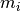
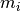

and the  values).
and the  values).Primary fit results¶
 and values are stored in the files
tau.dat and s.dat, respectively.
and values are stored in the files
tau.dat and s.dat, respectively.The regularization parameters of the last iterations are stored in the file lambdas.dat, one per line:
1.000000000000000021e-03 1.000000000000000056e-01
The chargeability values of the last iteration can be found in stats_and_rms/m_i_results.dat
The forward response of the final iteration is stored in f.dat. Each row contains one spectrum, with the first N columns containing either magnitudes or real parts, corresponding to the N frequencies. The second N columns contain either phase values or imaginary parts. Which parameters are stored in the column blocks is defined in the output file f_format.dat.
RMS values are stored in the subdirectory stats_and_rms, using the following files (final RMS of each spectrum per line). real/imag here correspond to real part and imaginary part of resistivity, respectively. The _error suffix denotes RMS values computed with data weighting.
filename
description
rms_all_error.dat
RMS of real and imaginary parts, including error weighting
rms_all_noerr.dat
RMS of real and imaginary parts, without error weighting
rms_imag_parts_error.dat
Error weighted RMS of imaginary parts
rms_imag_parts_noerr.dat
Non-error weighted RMS of imaginary parts
rms_real_parts_error.dat
Error weighted RMS of real parts
rms_real_parts_noerr.dat
Non-error weighted RMS of real parts
The number of iterations actually used for each spectrum are stored in nr_iterations.dat.
errors.dat: Stores the data weighting errors from the matrix .
Normalization factors are stored in normalization_factors.dat
version.dat: This file contains the package versions of either dd_tools, or geccoinv and dd_interface (depending on the installation method, dd_tools groups the later two packages).